390 × 844 · initial
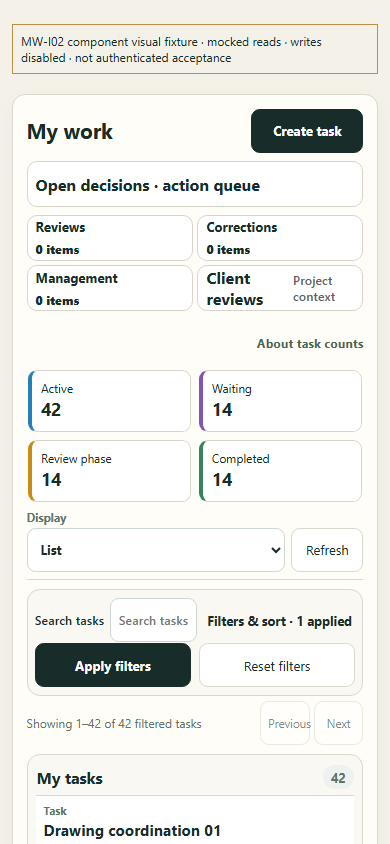
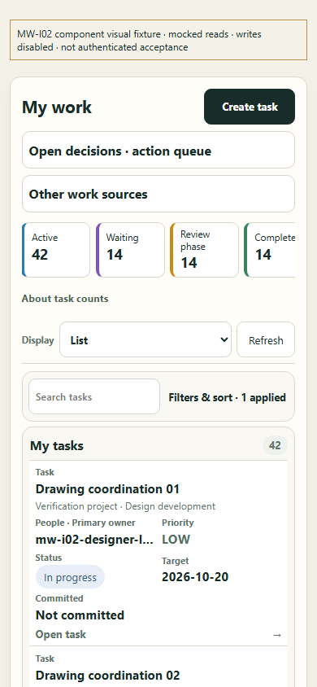

Current-component evidence only. Mocked reads, writes disabled, no authenticated acceptance. Same fixture state, width and 844px height before/after; scrollY0. Approved prototype hash verified. Prototype sample data differs from fixture data.


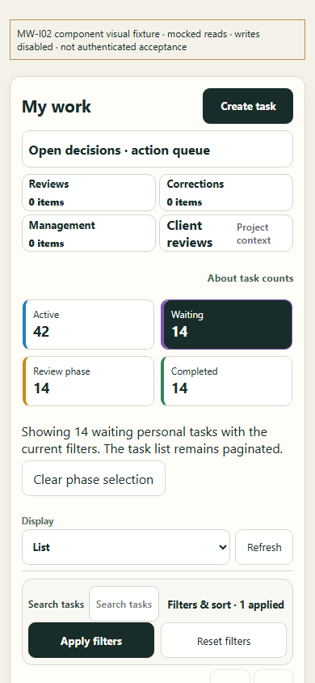
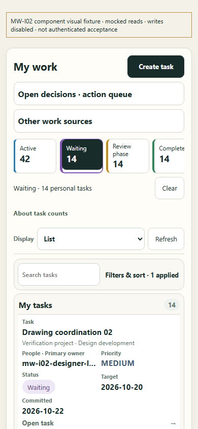
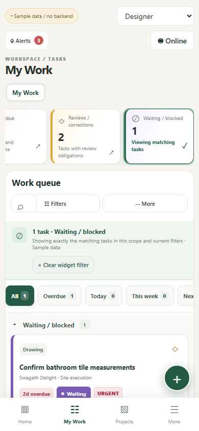
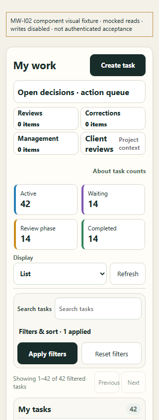
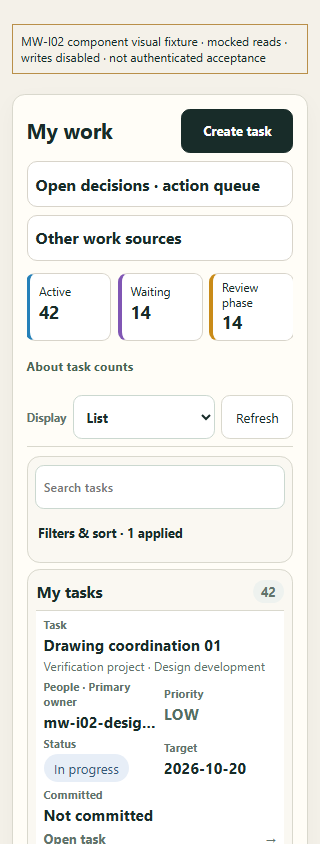
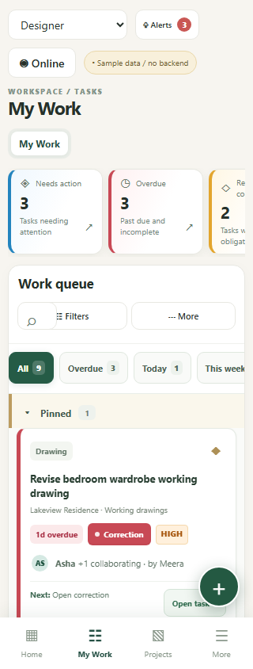
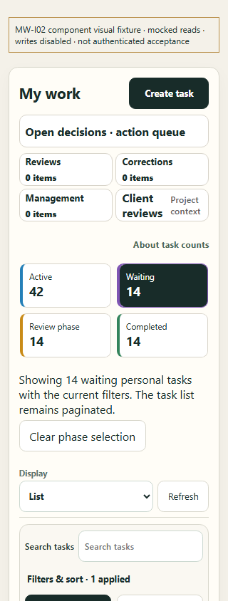
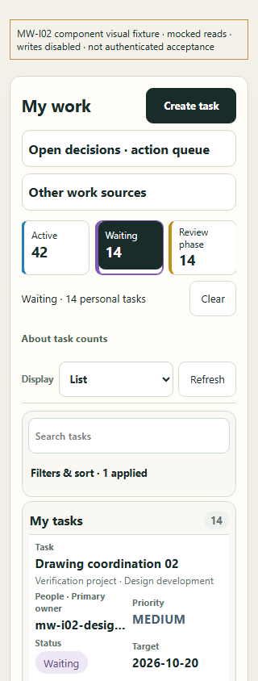
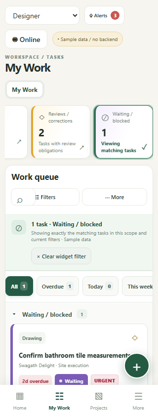